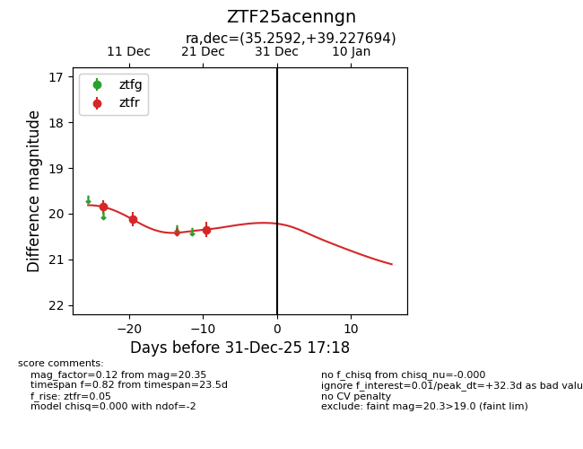
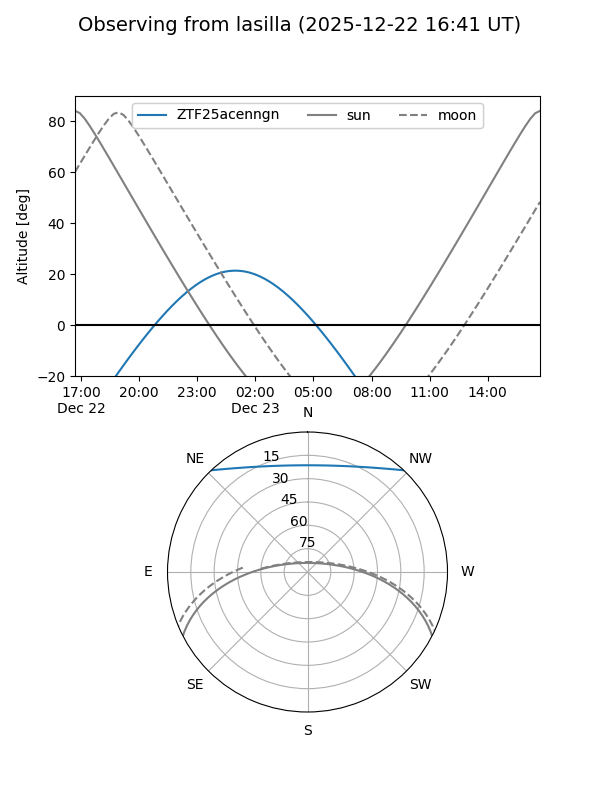
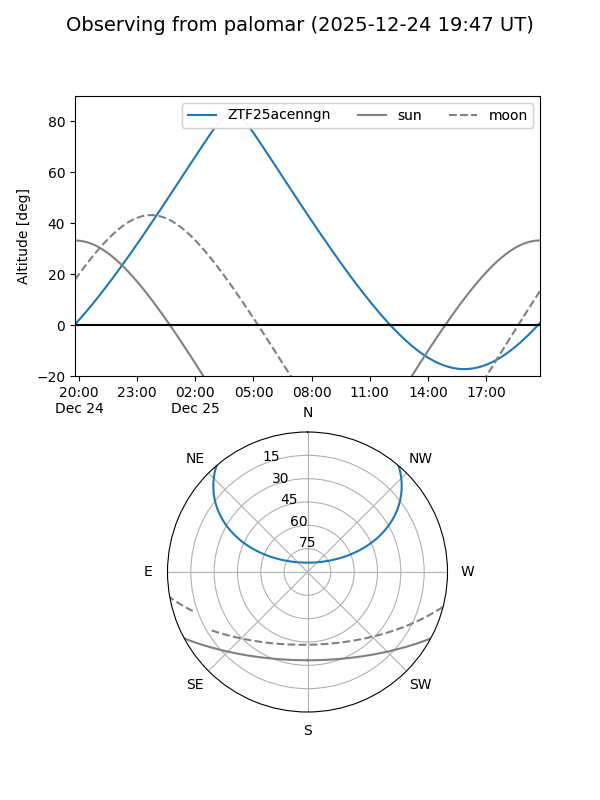
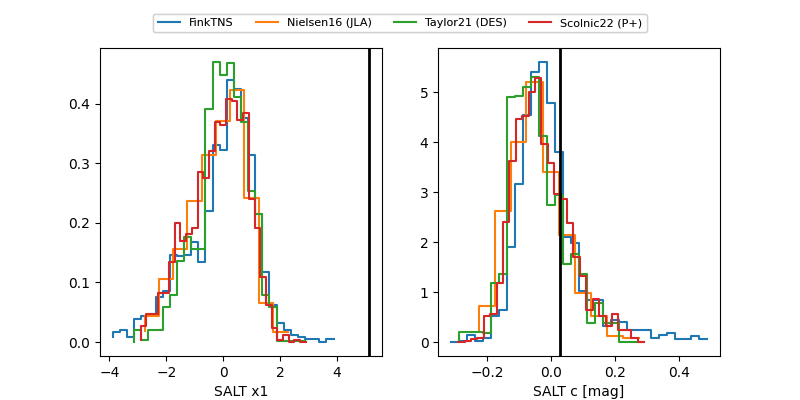

ZTF25acenngn
Target ZTF25acenngn at 2025-12-31 18:00
Aliases and brokers:
FINK: link
Lasair: link
ALeRCE: link
alt names
ZTF25acenngn (ztf,fink_ztf)
Coordinates:
equatorial (ra, dec) = 35.2592,+39.22769
equatorial (HMS+DMS) = 02:21:02.21,+39:13:39.70
galactic (l, b) = (141.2927,-20.42832)
Flags:
Photometry:
last ztfr=20.35
3 ztfr detections
Lightcurve

Visibility


Additional plots
